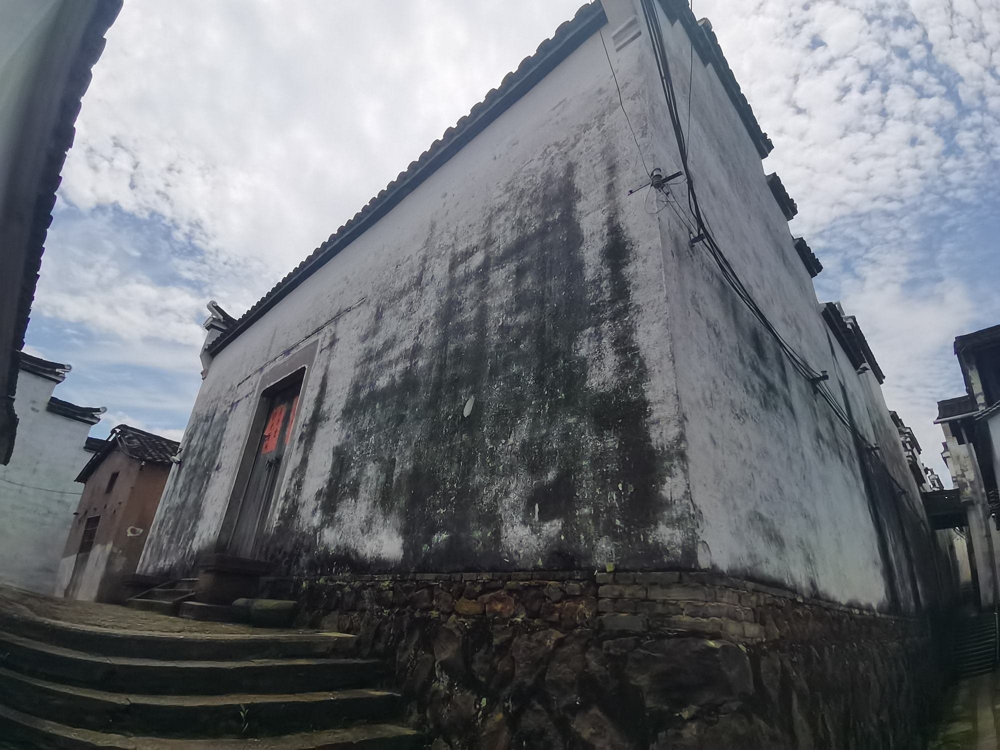
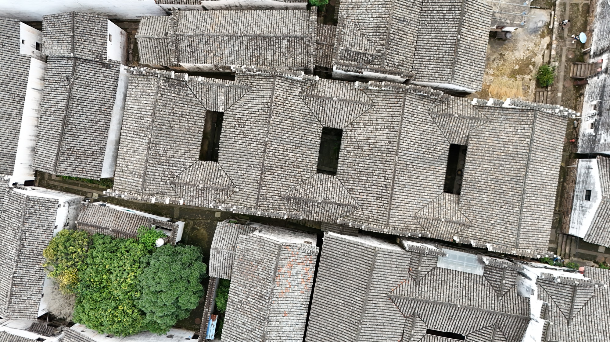

国保宗祠建筑
层叠白墙，深藏古祠旋庆堂
旋庆堂是新叶村叶氏的一座支派祠堂。与面向开阔水塘的总祠不同，它嵌在连片住宅之间，呈现出宗祠深入古村日常生活的一面。
01
清初营建的三进祠堂
旋庆堂建于清顺治十八年（1661年），是一座三进两明堂的祠堂，规模与村中最大的崇仁堂相当。它坐西向东，格局对称而规整，在支派祠堂中算得上气派的一座。
02
从大门到厅堂的“步步高”

旋庆堂从大门到厅堂逐级升高，一进比一进略高，当地称之为“步步高”，寓意子孙步步高升、家道日隆。拾级而入，人也随着一级级石阶，被引向祠堂最庄重的深处。
03
从石塘通向祠堂的街巷

旋庆堂西侧的街巷由村中石塘一路通到祠堂门前。沿路转折、收窄的巷道把视线逐步引向入口，祠堂因此不是孤立的纪念性建筑，而是古村道路网络中的一处公共空间。